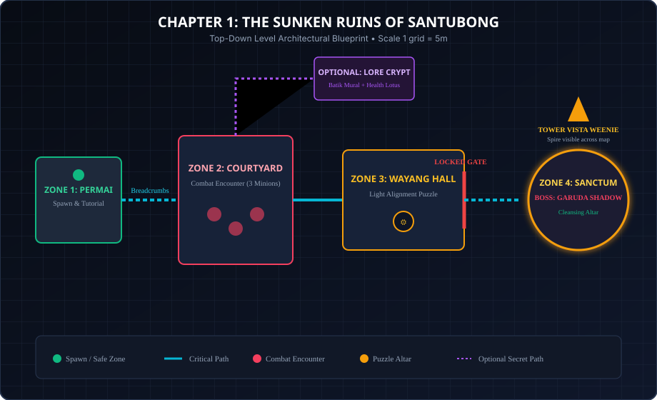
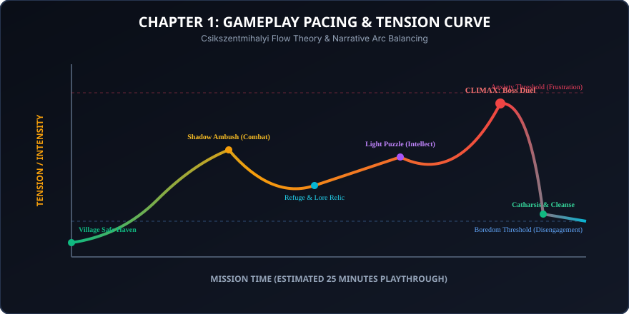

Designing the Gameplay
Synthesizing our mechanics into an immersive 3D spatial experience: architectural level layout, player navigation sightlines, Csikszentmihalyi flow pacing curves, mathematical combat balancing tables, and 3D asset resource planning.
🎯 Practical 003 Core Curriculum Focus
This documentation applies the principles of Spatial Design, Game Flow Theory, Level Blueprinting, and Game Balancing / Tuning, fulfilling the primary performance indicators of Course Learning Outcome 2 (CLO2).
3.1 Spatial Design Metrics & Navigation Psychology
Level design in 3D action games begins with establishing standard character physical metrics. These metrics determine the scale of the geometry, ensuring running, leaping, and climbing feel responsive and physically grounded.
Standard 3D Metric Specifications
| Physical Metric Parameter | Standard Value | Design Purpose & Clearance Rule |
|---|---|---|
| Player Character Height | 1.75 meters | Establishes human scale against temple architecture. |
| Camera Eye Height | 1.60 meters | Third-person over-shoulder pivot; provides optimal horizon sightline. |
| Normal Walk Speed | 3.5 m/s | Comfortable cadence for inspecting cultural props and murals. |
| Sprint Speed | 7.0 m/s | Allows rapid traversing across cleared courtyards. |
| Standing Jump Height | 2.2 meters | Permits clearing low timber fences and stone debris. |
| Running Jump Distance | 4.5 meters | Dictates max ravine gap spacing for platforming sections. |
| Standard Doorway Clearance | 3.0m x 2.2m | Prevents 3D camera collision clipping during transitions. |
| Corridor / Choke Width | 4.0 meters | Ensures adequate combat radius for 360° blade swings. |
Spatial Navigation Principles Applied
1. Weenie / Landmark Sighting
Borrowing Walt Disney's architectural concept of the "Weenie", the towering Golden Spire of Mount Santubong is visible from almost every outdoor vantage point in the level, serving as an intuitive visual compass that anchors player orientation.
2. Prospect and Refuge (Jay Appleton)
Levels alternate between narrow, covered stilt walkways (Refuge: safe, intimate spaces for catching breath and crafting salves) and wide open courtyards (Prospect: vast vistas showcasing upcoming challenges and enemy formations).
3. Breadcrumb Guidance
Subtle streams of glowing golden fireflies and illuminated brass incense burners naturally guide the player's eye along the critical path without requiring immersion-breaking neon mini-map arrows.
3.2 Architectural Level Blueprint: The Sunken Ruins
Below is the top-down spatial architectural map of Chapter 1: The Sunken Ruins of Santubong, illustrating spawn points, critical flow paths, enemy ambush arenas, puzzle barriers, and optional exploration secrets.

Figure 3.1: Top-down level blueprint of Chapter 1 with critical path, encounter arenas, and puzzle gates.
Zone 1 & Zone 2 Breakdown
Zone 1: Village of Permai (Spawn & Tutorial)
A tranquil stilt-house fishing hamlet sheltered beneath rainforest cliffs. Serves as the safe onboarding area where players master movement, camera controls, jumping, and basic interaction before facing hostility.
Zone 2: The Overgrown Courtyard (First Melee Encounter)
An ancient stone courtyard engulfed in shadow mist. Enclosed by crumbling walls, introducing three Corrupted Shadow Minions. Teaches lock-on camera mechanics, light slashes, and defensive parrying.
Zone 3 & Zone 4 Breakdown
Zone 3: Wayang Hall (Light Alignment Puzzle)
A grand ceremonial temple chamber with a massive locked stone portal. Houses the 3D rotating bronze artifact and overhead sun shaft. Acts as a mental breather pacing break after the courtyard skirmish.
Zone 4: Sanctum of the Keris (Climactic Boss Arena)
A dramatic circular arena perched atop the precipice overlooking Mount Santubong. The arena accommodates the fast-moving Corrupted Garuda boss fight, culminating in the solar cleansing altar.
3.3 Game Flow Theory & Mission Pacing Curve
Game pacing must avoid emotional monotony. According to Mihaly Csikszentmihalyi's Flow Theory, gameplay must balance challenge against player competence, alternating between high-intensity action peaks and relaxing cognitive valleys.

Figure 3.2: 25-minute mission tension curve illustrating cycles of exposition, tension, climax, and catharsis.
| Timeline Phase | Estimated Time | Gameplay Activity | Emotional State & Tension Level |
|---|---|---|---|
| 1. Exposition (Zone 1) | Minutes 0:00 – 4:00 | Waking in Permai; picking up dormant Keris; basic movement tutorial | Low (20%) — Curiosity, safety, immersion |
| 2. Rising Action (Transition) | Minutes 4:00 – 8:00 | Navigating decaying stilt bridges; encountering petrified stone warriors | Medium (45%) — Mild unease, anticipation |
| 3. First Combat Peak (Zone 2) | Minutes 8:00 – 13:00 | Ambush by 3 Shadow Minions; testing parry and silat combos | High (75%) — Adrenaline, focus, tactical reflexes |
| 4. Breather & Puzzle (Zone 3) | Minutes 13:00 – 18:00 | Reaching safe incense well; rotating Wayang artifact to unlock gate | Moderate (40%) — Intellectual focus, relaxation, eureka reward |
| 5. Climax: Boss Duel (Zone 4) | Minutes 18:00 – 23:00 | Duel against Corrupted Garuda; dodging aerial dives and parrying beak sweeps | Peak (95%) — Intense excitement, high stakes, full mechanical mastery |
| 6. Resolution & Catharsis | Minutes 23:00 – 25:00 | Cleansing the solar altar; sunlight breaks through clouds; zone restored | Low (15%) — Catharsis, triumphant relief, pride |
3.4 Mathematical Game Balancing & Combat Tuning Tables
Game feel in an action-adventure relies on millisecond-level responsiveness. Below are the precise mathematical tuning parameters established for player mobility and combat interactions:
Player Character Combat Parameters
| Action Parameter | Base Value | Invulnerability (i-Frames) | Stamina Cost | Recovery Latency | Tuning Rationale |
|---|---|---|---|---|---|
| Light Keris Slash | 18 Damage | None | 10 Stamina | 0.20 seconds | Fast jab; low commitment; initiates basic 3-hit combo chain. |
| Heavy Silat Strike | 45 Damage | None | 30 Stamina | 0.65 seconds | High risk/reward; breaks stone armor; punishes mistimed execution. |
| Dodge Roll (Elak) | 0 Damage | 0.25 seconds (15 frames @ 60fps) | 20 Stamina | 0.15 seconds | Generous enough for casual players, but stamina cost prevents infinite rolling. |
| Timed Parry (Tangkis) | Counters for 60 Dmg | Active during counter | 5 Stamina (Refunded on success) | 0.30s (if missed) | Tuned to 0.18s window (11 frames); delivers high gratification upon success. |
| Stamina Regeneration | 25 pts / sec | Delay: 0.8s after action | N/A | N/A | Full 100 pt stamina bar recharges from zero in exactly 4.8 seconds. |
Enemy Bestiary Balancing & Threat Scaling
| Enemy Archetype | Max HP | Attack Damage | Wind-Up Telegraph Window | Aggro Radius | Behavioral AI Pattern |
|---|---|---|---|---|---|
| Shadow Minion (Pocong Shade) | 50 HP | 12 Damage | 0.80 seconds (Red claw glow) | 12.0 meters | Aggressive swarm tactics; circles player; easily staggered by light attacks. |
| Corrupted Silat Phantom | 130 HP | 28 Damage | 0.50 seconds (Weapon flash) | 16.0 meters | Duels player using traditional Langkah silat; guards attacks; vulnerable to parry ripostes. |
| Boss: Corrupted Garuda Guardian | 650 HP | Phase 1: 35 Dmg Phase 2: 50 Dmg |
0.75 seconds (Screech + feather flair) | Entire Arena (30m) | Air dives, sweeping talon swipes, shadow projectile feathers. Phase 2 introduces flame trails. |
3.5 3D Asset Planning & Production Budget
To ensure our design can be realistically built during the subsequent 3D Game Programming course in Unity, our studio established rigid polygon, texture, and audio budgets.
Polygon Count Budgets
- Hero Character (Arya): 18,000 – 22,000 triangles (including sarong cloth bones).
- Boss (Corrupted Garuda): 25,000 triangles (rigged wings and talon mesh).
- Common Minions: 4,000 – 6,000 triangles each.
- Modular Temple Wall Kit: 800 – 2,500 triangles per 4m piece.
- Interactive Props (Braziers/Pedestals): 1,200 triangles.
PBR Texture Pipeline
- Resolution Standard: 2048 x 2048 for characters and bosses; 1024 x 1024 for environment props.
- Texture Map Packing: Albedo (BaseColor), Normal Map (DirectX), and Channel-Packed RMA (R = Roughness, G = Metallic, B = Ambient Occlusion).
- Stylization Shaders: Custom URP stylized rim-lighting shader accentuating keris golden auras.
Audio & Animation Manifest
- Locomotion Animations: 8-way blend space (Idle, Walk, Jog, Sprint, Jump Start, Fall, Land, Vault).
- Martial Arts Animations: 3-hit Light Slash combo, 1 Heavy Silat Thrust, 1 Parry React, 4 Directional Dodge Rolls.
- Dynamic Music Layers: 3 vertical stem tracks (Atmosphere Flute, Gamelan Percussion, War Drums).
➡️ Transitioning into Week 4
With level architecture mapped, flow curves calculated, and mathematical tuning tables set, we conclude our design journey in Week 4 (Practical 004) with rigorous design critique, peer reviews, side-by-side Before/After comparison analysis, and our final refined Game Design specification.